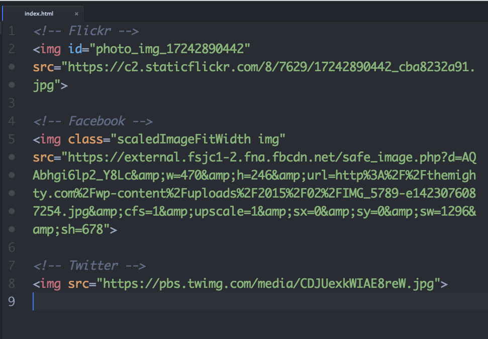
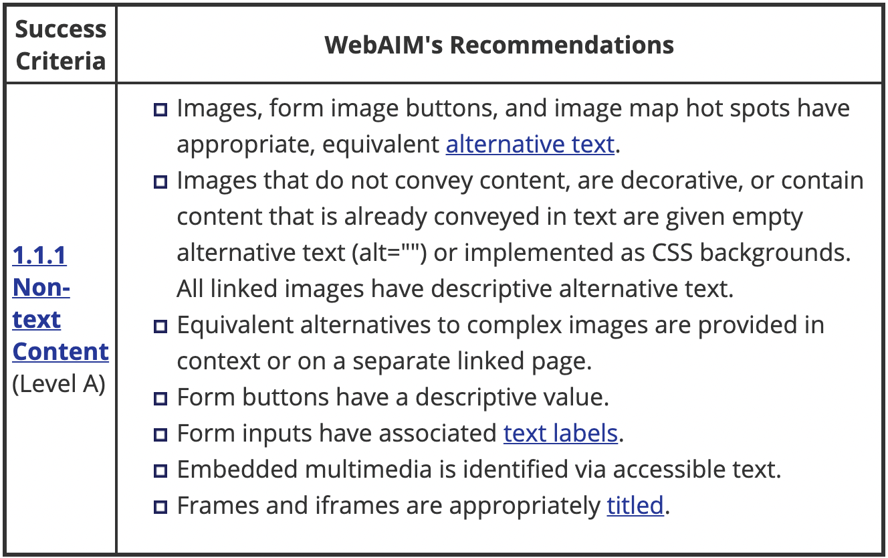
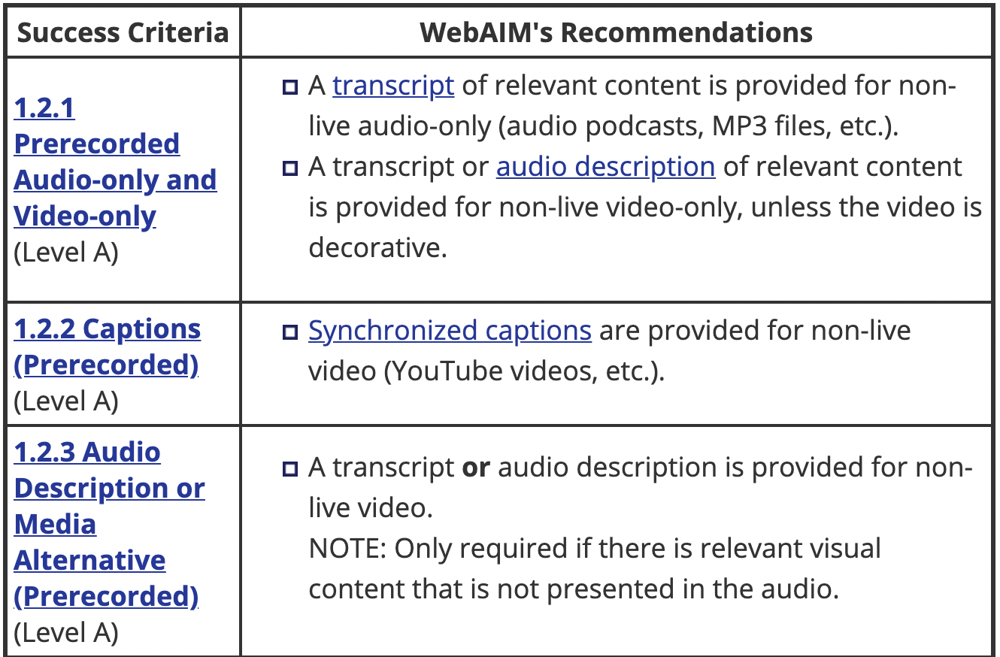

Screen readers convert digital text into synthesized speech. They empower users to hear content and navigate with the keyboard. The technology helps people who are blind or who have low vision to use information technology with the same level of independence and privacy as anyone else.
How to enable VoiceOver for Mac
Google offers a free screen reader built into the browser which you can download as an extension here.
The most popular free screen reader for Windows is NVDA and can be found here.
By default, when a screen reader encounters an image, if it can't find alt text it will read aloud the file's name.
This gets especially tricky for user generated images which often get hashed file names.
Adding an alt attribute will override that behavior. Screenreaders will read the alternative text instead of the file name.
<img src="https://pbs.twimg.com/media/KSJHECKJH983er.jpg" alt="A puppy in the park" />
Sometimes your website will have images that are strictly for decorative purposes. In that case, an empty alt attribute will force the screen reader to skip over the image.
<img src="https://pbs.twimg.com/media/KSJHECKJH983er.jpg" alt="" />
Search engines also make use of alternative text. For years SEO shops have suggested stuffing the keywords you want to rank for into alt text wherever possible. This provides a very bad accessibility experience.
Remember not all content on the web is visual! If your application has video content, be sure to use a captioning service to add closed captioning.
For our first exercise, we'll be installing a screen reader and getting comfortable navigating around a page using only the audio.
Click here to begin!